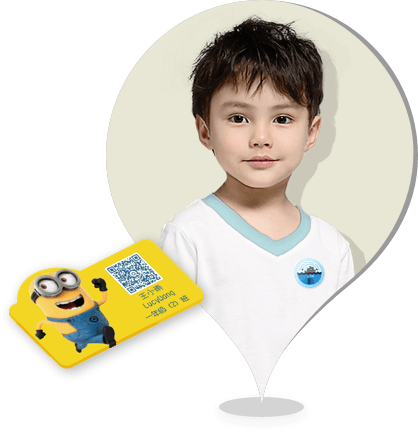

儿童定位贴
钦家防走失预警平台，于全球首创二维码智能身份标识，将二维码与服装相融合，拒绝做布料的搬运工，打造“会说话的衣服”，一物一码，帮助儿童服装厂商实现品牌差异化，带来企业新的经济增长点。
钦家帮助童装行业一改过去“服装厂—销售代理商—消费者”传统经营模式，实现厂商与消费者直接对接，每售出一件衣服，以二维码为纽带获取一个粉丝，帮助童装厂快速发展社群与粉丝经济，用互联网手段，促进整个儿童产业链互动，构建行业生态圈。

产品特性

云端数据加密，多重防火墙保护，家人信息不被泄露

产品经10000次干洗、水洗暴力测试，防水、抗皱

产品获国际Intertek绿色环保过敏认证，安全，舒适

个性定制，与衣服风格统一，美观简洁，实用大方
产品功能

守护家人安全 你不再孤军奋战
如果儿童发生走失，家长可在钦家APP平台一键发布紧急求助，平台通过一呼百应、逐级推送功能，响应全城帮助寻找。当路人发现走失儿童并扫描衣服上的二维码定位贴时，可立即电话联系家长告诉儿童所在位置，也可选择给家人留言，提供线索。